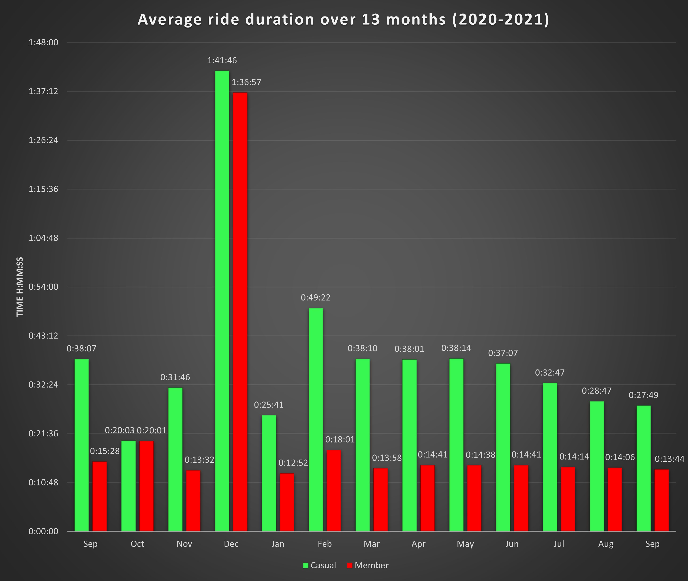

This project is about finding the differences between two groups of people that used a bike-share service named Cyclistic (fictional coompany) from September 2020 till September 2021. The two groups of customers are Annual members and Casual riders.
The following graph shows the average ride duration of both members and casual riders. It shows a clear difference in usage time, Members have an average ride length of 21 mins 18 secs, which is lower than casual riders with an average of 39 mins and 3 secs. A huge spike in December ride duration was caused by several riders keeping the same bike for longer periods of time before christmas. Data shows that Casual riders on average had a ride duration of 17 mins 45 secs more than that of members. 
The following graph shows us the average ride duration per weekday.
Here we can see that both rider groups take the longest rides in the beginning and end of the week,
ride duration for both groups increases towards the weekend.
In addition, Members’ and casual riders’ usage time increases at the same time as the week passes.

The last graph shows the number of times a day had the most rides per month throughout the 13 months for each member. The data shows us that Casuals most commonly used the services on Saturdays followed by Sundays. Whilst members took more rides most commonly towards the middle of the week, Wednesday being the most common.
Conclusions based on the analysis
1: Casual riders take longer rides 17 minutes 45 seconds longer on average. They also take less rides than members 8.67% less 2: Casual riders’ mode day is Saturday, followed by Sunday. Members’ mode day is Wednesday. Their most common ride days are during midweek. 3: Data shows that casual riders take less trips but ride for longer. Whilst members take more trips, their ride duration is shorter.